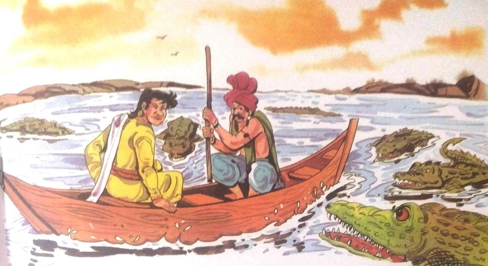

૭-દત્તક પુત્ર બનવાની શરત
રાજા વિક્રમાદિત્ય ફરી એક વાર મૃતદેહને પકડવા ઝાડની નજીક પહોંચ્યા. તેણે મૃતદેહને ઝાડ
પરથી ઉતાર્યો અને તેને ખભા પર લઈ ગયો અને ચાલ્યો ગયો. વેતાલાએ તેને બીજી વાર્તા કહેવાનું શરૂ
કર્યું-
એક વખતે. ત્રણ યુવાનો પોતપોતાના કૌશલ્યનું પ્રદર્શન કરવા માટે અલગ અલગ જગ્યાએથી વજ્રપુર ગયા હતા.
ત્યાં ત્રણેય મિત્રો બની ગયા. તેમાંથી રામ નામનો યુવક વિદ્વાન હતો, ભીમ કુસ્તીમાં કુશળ હતો અને સોમ
પાણીની રમતમાં તેની બરાબરી નહોતો. જ્યારે આ ત્રણેય વજ્રપુરમાં પોતપોતાની કળાનું પ્રદર્શન કર્યું
ત્યારે ગામના લોકોએ તેમની પ્રશંસા કરી અને તેમના રહેવા-જમવાની વ્યવસ્થા કરી.
થોડા સમય પછી વજ્રપુરમાં દુકાળ પડ્યો. કારણ કે ત્રણેય મિત્રોને મહેનત કરવી નહોતી તેથી
તેઓએ વજ્રપુર છોડીને શ્રીનગર જવાનું નક્કી કર્યું. શ્રીનગર પહોંચ્યા પછી, તે ત્રણેય ત્યાંના સૌથી
ધનિક વ્યક્તિ બસવેશ્વરના ઘરે ગયા. તે દિવસોમાં બસવેશ્વરના ઘરે જનબંધ નામનો એક તપસ્વી રહેતો હતો.
બસવેશ્વરના આતિથ્યથી ખુશ થઈને તેમણે કહ્યું, "આવતા વર્ષે તમારી પુત્રવધૂ એક પુત્રરત્નને જન્મ
આપશે."
આ સાંભળીને બસવેશ્વરની પત્ની વિમલાએ પોતાનું દુઃખ વ્યક્ત કર્યું અને કહ્યું,
"મહાત્મા! આ કેવી રીતે શક્ય છે? અમને કોઈ સંતાન નથી."
જનબંધે આંખો બંધ કરી ધ્યાન કર્યું. પછી તેણે આંખો ખોલી અને કહ્યું, "મારા આશીર્વાદ
ભગવાનનો સંકલ્પ છે. કોઈ લાયક યુવકને દત્તક લઈ તેના લગ્ન કરાવો. એક વર્ષમાં તમારી પુત્રવધૂ પુત્રને
જન્મ આપશે." "સાધુ મહારાજ! અમે પણ એવું જ વિચાર્યું. પણ અમને કેવી રીતે ખબર પડશે કે અમારા દત્તક
પુત્રને કોણ લાયક છે?" બસવેશ્વરાએ જણાવ્યું હતું. એટલામાં જ રામ, ભીમ અને સોમે દરવાજો ખખડાવ્યો. તેઓ
પોતાનો પરિચય આપે તે પહેલા જ જનબંધે તે ત્રણેયને નામથી બોલાવ્યા અને કહ્યું, “તમે ત્રણેય જ્યાંથી
આવો છો તે ગામમાં દુકાળ પડ્યો છે. તમે ત્રણેય જણ મહેનત કરવા માંગતા ન હતા, તેથી તમે તમારા પ્રતિભાઓ.
લાયક કામની શોધમાં આ શહેરમાં આવ્યા છો. શું મેં સાચું કહ્યું?"
ત્રણેય મિત્રો આશ્ચર્યથી એકબીજાના ચહેરા જોવા લાગ્યા. તેણે કહ્યું, "તમે મહાન છો. તમે
અમારા વિશે જે કહ્યું તે બિલકુલ સાચું છે. હવે જ્યારે તમે બધું જાણો છો, તો કૃપા કરીને અમને એ પણ
જણાવો કે અમારે શું કરવું જોઈએ."
જનબંધે કહ્યું, "આ બસવેશ્વરને કોઈ સંતાન નથી. દશરથ પર્વત પર એક વશિષ્ઠ વૃક્ષ છે. જો તમે
તેનું ફળ ખાશો તો તેની પત્ની માતા બનશે. પણ તે પર્વત પશ્ચિમ દિશામાં નથી. આ વૃક્ષ બાકીના ત્રણમાં
ક્યાંક છે." દિશાઓ. તમે ત્રણેય અલગ છો. - ત્રણ જુદી જુદી દિશામાં જાઓ અને તે ફળની શોધ કરો. જે તે ફળ
લાવશે તેને બસવેશ્વર તેની અડધી મિલકત આપશે. જો બે મહિનામાં તમારા ત્રણમાંથી કોઈ લાવી શકશે નહીં. તે
ફળ, પછી તમારામાંથી જે ફળ શોધવામાં વધુ મહેનત કરશે, બસવેશ્વર તેને પોતાનો દત્તક પુત્ર બનાવશે. અને
તમે ત્રણેયને ફળ શોધવામાં મહેનત મળશે."
જનબંધની વાતથી પ્રભાવિત થઈને ત્રણેય મિત્રો દશરથ પર્વત વિશે જાણવા નીકળી પડ્યા. રામ
ઉત્તર દિશામાં
ગયા. તે વનચક નામના જમીનદારને મળ્યો. તેણે મકાનમાલિકને દશરથ પર્વત વિશે પૂછ્યું. મકાનમાલિકે કહ્યું,
"દશરથ પર્વત વિશેની માહિતી ફક્ત બુદ્ધિશાળી વ્યક્તિ જ આપી શકે છે. તેથી, તમારે છ અઠવાડિયા સુધી મારા
માટે કામ કરવું પડશે, જેથી હું માની શકું કે તમે બુદ્ધિશાળી છો." જમીનદારની વાતથી રામ પ્રભાવિત થયા.
તે મકાનમાલિકના ઘરે કામ કરવા લાગ્યો. મકાનમાલિક તેની પાસેથી ઘણું કામ લેતો હતો. ઘરની સાફ-સફાઈ, પાણી
ભરવા, પશુઓની સંભાળ વગેરેની સાથે બોજ પણ તેમણે ઉઠાવવો પડતો હતો. જોકે રામ આ કરવા માંગતો ન હતો,
પરંતુ દશરથ પર્વત વિશે માહિતી મેળવવા માટે, તેને આ કાર્ય કરવાની ફરજ પડી. એવી જ રીતે, છ અઠવાડિયાં
વીતી ગયાં પછી, જ્યારે રામે મકાનમાલિકને દશરથ પર્વત વિશે જણાવવાનું કહ્યું, ત્યારે તેણે કહ્યું, "આ
છ અઠવાડિયામાં તમે પ્રમાણિકતાથી કામ કર્યું છે, હવે જો હું તમને દશરથ પર્વત વિશે કહું તો તમે તરત જ
અહીં આવી જશો." અહીંથી જતો રહેશે. આવો પ્રામાણિક સેવક મને ક્યાંથી મળશે. તમે આટલું પણ સમજી શક્યા
નથી. મતલબ કે તમે બુદ્ધિશાળી નથી અને દશરથ પર્વત વિશે જાણવાને લાયક નથી."મકાનમાલિકનો જવાબ સાંભળીને
રામ સમજી ગયા કે મકાનમાલિક જૂઠો અને ધૂર્ત છે. નિરાશ થઈને તે પાછો શ્રીનગર તરફ ગયો.
ભીમ દક્ષિણ તરફ ગયો હતો. તે વિચિત્રપુર નામના ગામમાં ગયો. ત્યાં તેણે પોતાની કુસ્તી
કૌશલ્યનું પ્રદર્શન કર્યું. તેના પ્રદર્શનથી ખુશ થઈને ગ્રામજનોએ તેને ત્યાં જ રહેવા કહ્યું. તેણે
ગામલોકોને તેના ત્યાં આવવાનું કારણ જણાવ્યું. આ સાંભળીને શિલાદ્રા નામની વ્યક્તિએ કહ્યું, “અમારા
ગામથી થોડે દૂર એક દુર્ગમ પર્વતમાળા છે. હું પર્વતારોહક છું. આ પર્વતોની વિશેષતાઓ જાણવા માટે હું
તમારા જેવા શક્તિશાળી વ્યક્તિની શોધમાં છું. જો તમે તૈયાર હોવ તો હું તમારી સાથે જવા તૈયાર છું. એ
પહાડો વચ્ચે કોણ જાણે દશરથ પર્વત પણ હોય." ભીમે શિલાદની વાત સાચી માની અને બંને પહાડ પર ચઢવા માટે
નીકળ્યા. પહાડોમાંથી પસાર થતો રસ્તો ઘણો જોખમી હતો. ત્યાં જંગલી પ્રાણીઓ અને ઝેરી પ્રાણીઓનો ભય હતો.
બંનેએ સહન કર્યું. છ અઠવાડિયા સુધી તમામ મુશ્કેલીઓ. પ્રવાસ કર્યો, પરંતુ આખરે તે દશરથ પર્વતને શોધી
શક્યો નહીં અને પાછો ફર્યો. પરત ફર્યા ત્યારે તેનું ગ્રામજનો દ્વારા સ્વાગત અને સન્માન કરવામાં
આવ્યું. જો કે ભીમ દશરથ પર્વતને ન મળવાથી થોડો દુઃખી હતો, તે ખુશ હતો કે તેણે કામ કર્યું છે. કઠિન
અને કષ્ટો સહન કર્યા પછી તે ગ્રામજનો પાસેથી રજા લઈને શ્રીનગર જવા રવાના થયો.
|
|
સોમ પૂર્વ તરફ મકરવલી નામની નદીના કિનારે આવેલા જલપુર નામના ગામમાં
ગયા. તેણે પોતાની
વોટર સ્પોર્ટ્સથી ત્યાંના ગ્રામજનોને સંતુષ્ટ કર્યા. તેણે ગામલોકોને તેની જગ્યાએ
આવવાનું કારણ
જણાવ્યું. તેણે શું કહ્યું તે જાણ્યા પછી મકર નામના વ્યક્તિએ કહ્યું, "આ નદીમાં
મુસાફરી કરીએ તો
મગરોના ટાપુ પર પહોંચી શકીએ. કદાચ ત્યાં દશરથ પર્વત હોય. આ નદીમાં મગરોની પુષ્કળ
સંખ્યાને કારણે કોઈ
તે ટાપુ પર જવાની હિંમત કરતું નથી."હું એક નાવિક છું. તે ટાપુની વિશેષતા જાણવા માટે
હું તમારી જેમ
પાણીની કુશળ વ્યક્તિની શોધમાં છું . જો તમે 'હા' કહો તો અમે કાલે નીકળી જઈશું.
|
થોડીવાર વિચાર્યા પછી સોમ સંમત થયો. બંને હોડીમાં બેસીને મકરદ્વીપ તરફ પ્રયાણ કર્યું.
તમે જ્યાં જુઓ ત્યાં મગરો હતા. સોમે તેની પાણીની કુશળતાથી મગરોને ભગાડી દીધા. લગભગ બે અઠવાડિયાની
મુસાફરી પછી તેઓ મગરોના ટાપુ પર પહોંચ્યા.
ટાપુ પર પહોંચતા જ કેટલાક લોકોએ તેમને ઘેરી લીધા અને તેમના રાજા પાસે લઈ ગયા. તેમની આખી
વાર્તા સાંભળ્યા પછી રાજાએ કહ્યું, "આપણી દેવી એક મગર છે. તેની મૂર્તિ નદીની મધ્યમાં છે. જ્યારે તે
માનવ બલિ માંગે છે, ત્યારે તે વિદેશીઓને અહીં બોલાવે છે. તમે બંને આવા વિદેશી છો. આપણે ફેંકવું
જોઈએ. તમે નદીમાં." આપશે. અમારી દેવી મગરના રૂપમાં આવશે અને તમને ગળી જશે."

સોમે કહ્યું, "મારી તમને એક વિનંતી છે. તમે પહેલા મને નદીમાં ફેંકી દો, મારા મિત્રને
નહીં. હું પ્રાર્થનાથી દેવીને પ્રસન્ન કરીશ અને સલામત રીતે પાછો આવીશ. પણ જો હું દેવી માટે ખોરાક
બનીશ તો મારા મિત્રને નદીમાં ફેંકી દો. "
સોમાને નદીમાં ફેંકી દીધી હતી. એક મગરે તેના પર હુમલો કર્યો. સોમે વિવિધ પ્રકારના જળ
વિન્યાસોની મદદદથી મગરને ભગાડી દીધો અને પછી દેવીની મુર્તિને પ્રણામ કર્યું. તે જીવતો પાછો
આવ્યો. રાજાએ સોમાના વખાણ કર્યા અને કહ્યું, "તમને અમારા કુળદેવીના આશીર્વાદ મળ્યા છે. તેથી, તમારી
સંભાળ રાખવાની અમારી ફરજ છે. તમે અહીં આરામથી રહો અને દશરથ પર્વતની શોધ કરો." સોમાએ ત્યાં પર્વતની
શોધ કરી, પરંતુ તે નિષ્ફળ ગયો. તે સમજી ગયો કે અહીં કોઈ દશરથ પર્વત નથી, તેથી તેણે પાછા ફરવાનું
શ્રેષ્ઠ માન્યું. તેમણે બધાને વિદાય આપીને તે શ્રીનગર તરફ પાછો ફર્યો.
આ ત્રણ મિત્રો બે મહિનાના અંત સુધીમાં શ્રીનગર પહોંચી ગયા હતા. તે બસવેશ્વરના ઘરે ગયો.
ત્યાં સુધીમાં સાધુ જનબંધ પણ હતો. ત્રણેય પોતપોતાની વાર્તાઓ જનબંધને સંભળાવી. પછી જનબંધે કહ્યું,
"મારા કથન મુજબ, તમે ત્રણેયને એવા રાજ્યો મળ્યા છે જ્યાં તમને કામ મળી શકે. ભીમને વિચિત્રપુર અને
સોમને જલપુર જવું જોઈએ. ત્યાં તમારું જીવન આરામથી જીવો. રામે તમારા બંને કરતાં વધુ મુશ્કેલ કાર્યો
કર્યા. પરંતુ ક્યાંય કામ નહીં મળે. તેથી બસવેશ્વર તેને પોતાનો દત્તક પુત્ર બનાવશે." સાધુ જનબંધનો
નિર્ણય સાંભળીને સોમ અને ભીમ એક વર્ષ માટે સ્તબ્ધ રહી ગયા. પછી તેઓએ પોતાના પર કાબૂ રાખ્યો અને
બધાની રજા લઈને તે સ્થળ છોડી દીધું.
વેતાલાએ કહ્યું, "સોમ અને ભીમે બસવેશ્વરને દત્તક પુત્રોમાંથી એક બનાવવા માટે સખત
પ્રયાસો કર્યા હતા. પરંતુ, જનબંધે બંનેને પસંદ કરવાને બદલે છેતરનાર દ્વારા છેતરાયેલા રામને હકદાર
તરીકે પસંદ કર્યા હતા. આ ઘટનાએ એ પણ સાબિત કર્યું કે તે બન્યું હતું. રામ એક મહાન મૂર્ખ છે. શું
જનબંધે રામને પસંદ કરીને ભૂલ નથી કરી? જો તમે ચૂપ રહેશો તો તમારું માથું ટુકડા થઈ જશે."
રાજા વિક્રમાદિત્યએ તરત જ કહ્યું, "રામ છેતરાયા હતા અને લૂંટારાની ચુંગાલમાં ફસાઈ ગયા
હતા. તેણે બધા કામ કર્યા હતા જે તેને બિલકુલ પસંદ નહોતા. પરંતુ ભીમ અને સોમાએ શંકાસ્પદ ધ્યેય હોવા
છતાં પીડાદાયક કાર્યની કદર કરી હતી, કારણ કે તેઓ આ કાર્યો કરવા માટે હતા. તેની ગમતી અને તેની ક્ષમતા
અનુસાર હતી. મનપસંદ કાર્ય કરવું હંમેશા સરળ હોય છે, પછી ભલેને આપણે મુશ્કેલીઓ સહન કરવી પડે. તેવી જ
રીતે, જો કામ કોઈને પસંદ ન હોય તો, સરળ કાર્ય પણ મુશ્કેલ બની જાય છે. રામે એમ કર્યું તેથી જનબંધે
તેને પસંદ કર્યો. તેણે કોઈ તરફેણ ન દર્શાવી. સોમા અને ભીમ બંને વાત સમજ્યા પછી ત્યાંથી ચાલ્યા ગયા."
વેતાલાએ રાજાના જવાબથી સંતોષ વ્યક્ત કર્યો અને પાછો ગયો અને ઝાડ પર લટકી ગયો.
|